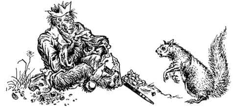
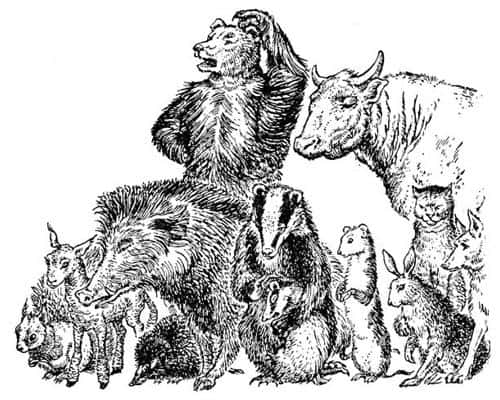

Maymunun Görkemi
“At efendi, at efendi” dedi Tirian dizginleri aceleyle keserken. “Bu yabancılar seni nasıl kendilerine köle ettiler? Narnia istilaya mı uğradı? Savaş mı çıktı?”
“Hayır efendim” dedi At nefes nefese, “Aslan burada. Hepsi onun emri. Aslan dedi ki—”
“Tehlikeye dikkat, Kralım” dedi Cevher. Tirian başını kaldırdığında Calormenliler’in her yönden onlara doğru koşmaya başladığını gördü, aralarında birkaç tane de konuşan hayvan vardı. İki adam bağırmaya fırsat bulamadan ölmüş, bu yüzden kalanların neler olduğunu anlaması biraz zaman almıştı. Ama şimdi anlamışlardı. Birçoğunun elinde kınından çekilmiş kılıçlar vardı.
“Çabuk sırtıma binin” dedi Cevher. Kral eski dostunun sırtına atladı ve dörtnala oradan uzaklaştılar. Cevher, düşmanların görüş mesafesinden çıkar çıkmaz iki üç kere yön değiştirdi, bir derenin karşı kıyısına geçti ve adımlarını yavaşlatmadan bağırdı,
“Nereye, efendim? Cair Paravel’e mi?”
“Dur dostum” dedi Tirian. “İneyim.” Atın sırtından inerek yüzüne baktı.
“Cevher” dedi Kral. “Korkunç bir şey yaptık.”
“Damarımıza basıldı” dedi Cevher.
“Haberleri olmadan üzerlerine atlamamız çok kötü oldu! Üstelik silahları da yoktu. Biz katiliz Cevher. Şerefim sonsuza kadar lekelendi.”
Cevher boynunu büktü. O da utanıyordu.
“Dahası” dedi Kral, “at, bunun Aslan’ın emri olduğunu söyledi. Sıçan da aynı şeyi söylemişti. Hepsi Aslan’ın burada olduğunu söylüyor. Ya doğruysa?”
“Nasıl olur, efendim, Aslan böylesine korkunç şeyleri nasıl buyurabilir ki?”
“O uysal bir aslan değil” dedi Tirian. “Onun ne yapacağını nereden bilebiliriz? Biz katiliz! Cevher, ben geri döneceğim. Kılıcımı bırakıp kendimi Calormenliler’in ellerine teslim edecek, beni Aslan’a götürmelerini isteyeceğim. Cezam neyse o versin.”
“Ölüme gitmiş olacaksınız” dedi Cevher.
“Aslan’ın beni ölüme mahkûm etmesini dert edeceğimi mi sanıyorsun?” dedi Kral. “Bu önemli değil, hem de hiç. Aslan’ın geldiğini, ama bizim inandığımız ve özlediğimiz Aslan’a hiç benzemediğini düşünüp derin bir korkuyla yaşamaktansa ölmeyi tercih ederim. Benim için güneşin kapkara doğduğunu görmek gibi bir şey olur bu.”
“Biliyorum” dedi Cevher. “Ya da sanki su içmişsin, ama kupkuru bir suymuş gibi. Siz haklısınız efendim. Bu her şeyin sonu. Gidelim ve teslim olalım.”
“Birlikte gitmemiz gerekmiyor.”
“Eğer birbirimizi seviyorsak sizinle gelmeme izin verin” dedi Tekboynuz. “Siz ölürseniz ve Aslan da gerçek Aslan değilse benim için yaşamın ne anlamı kalır ki?”
Döndüler ve acı gözyaşları içinde geriye doğru yürüdüler.
İnsanların çalıştığı yere gelir gelmez Calormenliler bağırmaya başladı ve silahları ellerinde onlara doğru koştular. Kral kılıcını kabzası onlara bakacak şekilde uzattı ve:
“Eskiden Narnia Kralı, ama şimdi şerefi lekelenmiş bir şövalye olan ben, kendimi Aslan’ın adaletine teslim ediyorum. Beni ona götürün” dedi.
“Ben de teslim oluyorum” dedi Cevher.
Esmer adamlar hep bir olup üzerlerine yürüdüler. Cevher’in boynuna bir yular taktılar. Kral’ın kılıcını alıp ellerini arkasında bağladılar. Miğfer takan ve komutan olduğu anlaşılan bir Calormenli, Tirian’ın başındaki altın tacı kapıp aceleyle elbisesinin içine sakladı. Esirleri, yukarıdaki açık alana doğru götürdüler. Esirlerin gördüğü şuydu:
Açık arazinin ortasında çatısı ottan yapılmış, ahıra benzeyen küçük bir kulübe vardı. Kapısı kapalıydı. Kapının önündeki çimenlikte bir maymun oturuyordu. Aslan’ı görmeyi ümit eden ve maymun hakkında bir şey duymamış olan Tirian ile Cevher gördüklerine çok şaşırdılar. Kuşkusuz, gördükleri Külyutmaz’dı, ama Kazan Göleti’nde yaşadığı zamankinden on kat daha çirkin görünüyordu, çünkü artık elbiseleri vardı. Bir cüce için dikilmiş, üzerine pek iyi oturmayan kırmızı bir ceket giyiyordu. Arka ayaklarında, ona biraz büyük gelen, mücevher işlemeli terlikler vardı; bildiğiniz gibi maymunların arka ayakları ele benzer. Başına kâğıttan yapılmış gibi görünen bir taç takmıştı. Yanında bir yığın fındık fıstık vardı; bunları ağzıyla kırıyor, kabuklarını tükürüyor, kaşınmak için kırmızı ceketini yukarıya kaldırıp duruyordu. Çok sayıda konuşan hayvan, yüzleri ona dönük ayakta duruyordu, herkesin yüzünde korkunç bir kaygı ve şaşkınlık ifadesi vardı. Esirlerin kim olduklarını gördüklerinde hepsi üzüntüden inlemeye başladı.
“Ey Aslan’ın sözcüsü Lord Külyutmaz” dedi Calormenliler’in reisi. “Sana esirleri getirdik. Cesaretimiz, maharetimiz ve ulu Tanrı Taş’ın izniyle bu gözü dönmüş katilleri canlı olarak ele geçirdik.”
“Şu adamın kılıcını bana verin” dedi Maymun. Kral’ın kılıcını aldılar, kını ve kayışıyla birlikte Maymun’a verdiler. Maymun bunu boynuna astı; artık eskisinden daha da gülünç görünüyordu.
“O ikisiyle daha sonra ilgileniriz” dedi Maymun, esirlere doğru bir kabuk tükürerek. “Daha önce yapılması gereken başka işlerim var. Beklesinler. Şimdi herkes beni dinlesin. Söyleyeceğim ilk şey fındıklar hakkında. Nerede o sincapların reisi?”
“Buradayım, efendim” dedi bir kızıl sincap, ileriye çıkıp endişeyle eğilerek.
“Buradasın öyle mi?” dedi Maymun kötü bir bakış atarak. “Şimdi söyleyeceklerime dikkat et. Ben - yani Aslan - daha fazla fındık fıstık istiyorum. Getirdiklerin yeterli değil. Daha fazla getirmelisin, anladın mı? İki misli daha fazla. Fındıkları yarın güneş batarken istiyorum, sakın ha küçük ve çürük olanları getirmeyin bana.”
Diğer sincaplar aralarında dehşet içinde mırıldandılar. Reis sincap cesaretini toplayıp:
“Aslan bu konuda bizimle bizzat konuşabilir mi lütfen? Onu görmemize izin verilirse—” dedi.
“Göremezsiniz” dedi Maymun. “Belki bu akşam, kibarlık edip birkaç dakikalığına çıkabilir. Gerçi siz böyle bir inceliği hak etmiyorsunuz, ama neyse. O zaman hepiniz onu görebilirsiniz. Ancak etrafına toplanıp sorularla canını sıkmanıza izin vermeyecek. Söylemek istediğiniz her şeyi ona ben ileteceğim; tabii eğer söylenmeye değer bir şey olduğuna karar verirsem. Bu arada sincaplar fındık işleriyle ilgilensin. Yarın akşam fındıklar elimin altında olmazsa başınız belaya girer.”

Zavallı sincaplar arkalarından köpek kovalıyormuş gibi koşarak uzaklaştı. Bu yeni emir onlar için çok kötü bir şeydi. Kış için özenle topladıkları kabuklu yemişlerin neredeyse hepsini yemiş, geriye kalanların da çoğunu şimdiden Maymun’a vermişlerdi. Ellerinde kendi ihtiyaçlarını karşılayacak kadar bile yemiş kalmamıştı.
Sonra kalabalığın diğer tarafından derin bir ses - büyük dişli bir yabandomuzunun sesi - duyuldu.
“Peki neden Aslan’ı doğru dürüst görüp konuşamıyoruz?” dedi. “Eskiden Narnia’ya geldiğinde herkes onunla yüz yüze konuşabilirdi.”
“Buna inanmayın” dedi Maymun. “Söylenenler doğru olsa bile, artık zaman değişti. Aslan size karşı çok yumuşak davrandığını söylüyor, anlıyor musunuz? Eh, artık eskisi gibi davranmayacak. Bu kez sizi yola getirecek. Onun uysal bir aslan olduğunu düşünmek ne demekmiş göreceksiniz.”
Hayvanlar arasında önce hafif bir inilti duyuldu, ardından etrafa ölüm sessizliği çöktü.
“Şimdi, öğrenmeniz gereken başka bir şey daha var” dedi Maymun. “Bazılarınızın benim maymun olduğumu söylediğini duyuyorum. Değilim. Ben insanım. Eğer maymun gibi görünüyorsam çok yaşlı olduğumdandır. Yüzlerce yıl yaşadım. Çok yaşlı olduğum için de çok akıllıyımdır. Bu kadar akıllı olduğum için Aslan’ın konuşacağı tek kişi benim. Bir sürü aptal hayvanla konuşması için onu rahatsız edemeyiz. Ne yapmanız gerektiğini o bana, ben de size söylerim. Nasihatlerimi dinleyin ve her şeyi çabucak, size verilen süreden daha da kısa zamanda bitirmeye çalışın, çünkü saçmalıklara tahammülü yoktur.”
Ortalıkta ölüm sessizliği vardı; sadece küçük bir porsuğun ağlaması ve annesinin onu susturmaya çalışması duyuldu.
“Bir şey daha” diye devam etti Maymun, ağzına yeni bir fındık atarak, “bazı atların, ‘Kütük taşıma işini elimizden geldiğince çabuk bitirelim, o zaman tekrar özgür oluruz’ dediklerini duyuyorum. Bu fikri aklınızdan hemen çıkarın. Sadece atlar değil. Yakında, çalışabilen herkes çalıştırılacak. Aslan, Calormen kralıyla - esmer yüzlü dostlarımız Calormenliler’in deyişiyle - Tisrok’la anlaşmaya vardı. Bütün atlar, boğalar ve eşekler yaşamlarını sürdürmek için, diğer ülkelerdeki atların ve benzeri hayvanların yaptıkları gibi yük taşıyıp araba çekmek üzere Calormen’e gönderilecek. Cüceler, köstebek, tavşan gibi tüm kazıcı hayvanlar da Tisrok’un madenlerinde çalışmak için oraya gidecek. Ayrıca…”
“Hayır, hayır, hayır” diye bağırıştı hayvanlar. “Bu doğru olamaz. Aslan bizi asla Calormen kralına köle olarak satmaz.”
“Kapayın çenenizi! Gürültüyü kesin!” dedi Maymun hırıltıyla. “Kim kölelikten söz ediyor ki? Köle olmayacaksınız. Para alacaksınız; hem de yüklü bir miktar. Yani demek istiyorum ki, ücretleriniz Aslan’ın hazinesine ödenecek ve o her şeyi sizin iyiliğiniz için kullanacak.” Sonra etrafına bir göz attı ve Calormenliler’in reisine göz kırptı. Calormenli başını eğip gösterişli Calormen âdetlerine uygun olarak şu cevabı verdi:
“Aslan’ın dirayetli sözcüsü! Tisrok (ömrü uzun olsun) bu sağduyulu plan hakkında siz Lordlarıyla tamamen aynı fikirdedir.”
“İşte! Gördünüz mü?” dedi Maymun. “Her şey planlandı. Hepsi sizin iyiliğiniz için. Kazandığınız parayla Narnia’yı yaşamaya değer bir ülke haline getirebiliriz. Portakal ve muz yağacak; yollar, büyük şehirler, okullar, bürolar, kırbaçlar, tasmalar, eğerler, kafesler, köpek evleri ve hapishaneler… ah, her şeyimiz olacak.”
“Biz bunları istemiyoruz ki” dedi yaşlı bir ayı. “Biz özgür olmak istiyoruz. Tüm bunları Aslan’dan duymak istiyoruz.”
“Tartışmaya başlama yine” dedi Maymun, “çünkü buna dayanamıyorum. Ben bir insanım; sense sadece şişko, aptal ve yaşlı bir ayı. Sen özgürlükten ne anlarsın ki? Özgürlüğün her istediğini yapmak olduğunu sanırsın. Hata ediyorsun. Bu gerçek özgürlük değildir. Gerçek özgürlük size söylediklerimi yapmanızdır.”
“H-ı-m-m” diye homurdandı ayı ve başını kaşıdı; bu tür şeyleri anlamak onun için çok zordu.
“Lütfen, lütfen” diye bir kuzunun ince sesi duyuldu; öylesine küçük bir kuzuydu ki, konuşmaya cesaret edebilmesine herkes şaşırmıştı.
“Yine ne var?” dedi Maymun. “Acele edin.”

“Lütfen” dedi Kuzu, “hiç anlayamıyorum. Bizim Calormenliler’le işimiz ne? Biz Aslan’ın kullarıyız. Onlar Taş’ın kulları. Onların Taş denilen bir tanrısı var. Dört kollu ve akbaba kafalı olduğu söyleniyor. Onun sunağında insanları kurban ediyorlar. Taş diye birinin olduğuna inanmıyorum. Olsa bile, Aslan onunla nasıl dost olabilir ki?”
Tüm hayvanlar başlarını çevirdi, hepsi parlak gözleriyle Maymun’a bakıyordu. Bunun o ana kadar sorulan en iyi soru olduğunu biliyorlardı.
Maymun ayağa sıçradı ve kuzuya tükürdü.
“Bebek!” diye tısladı. “Seni küçük aptal mızıkçı! Eve git de annen sana süt versin. Sen böyle şeylerden ne anlarsın? Diğerleri, dinleyin. Taş, Aslan’ın sadece bir başka ismidir. Bizim haklı, Calormenliler’in haksız olduğu fikri gülünçtür. Bunu şimdi daha iyi biliyoruz. Calormenliler değişik kelimeler kullanıyor, ama hepimiz aynı şeyi söylemek istiyoruz. Taş ve Aslan, o bildiğiniz kişinin iki değişik ismidir. Aralarında asla bir anlaşmazlık olamaz. Bunu kafanıza sokun, sizi aptal hayvanlar. Taş Aslan’dır, Aslan da Taş.”
Köpeğinizin yüzünün bazen ne kadar üzgün göründüğünü bilirsiniz. Bir de o zavallı konuşan hayvanlarınkini düşünün. Tüm o dürüst, alçakgönüllü ve serseme dönmüş kuşların, ayıların, porsukların, tavşanların, köstebeklerin ve farelerin yüzlerinde, köpeğinizinkinden çok daha hüzünlü bir ifade vardı. Bütün kuyruklar aşağıdaydı ve bütün bıyıklar sarkmıştı. Onları görseydiniz kalbiniz derinden yaralanırdı. Mutsuz görünmeyen sadece bir kişi vardı.
Bu kızıl bir kediydi; yaşamının en güzel zamanlarını süren, kuyruğunu pençelerinin etrafına dolamış, tüm hayvanların en önündeki sırada dimdik oturan büyük bir erkek kediydi.
Bütün bunlar olup biterken kedi, Maymun’a ve Calormenli yüzbaşıya dik dik bakıyordu; bir kez olsun kırpmamıştı gözlerini.
“Özür dilerim” dedi Kedi, çok nazik bir şekilde, “ama merak ettiğim bir şey var. Calormenli arkadaşın da aynı şeyi söylüyor mu?”
“Hiç şüpheniz olmasın” dedi Calormenli. “Bilge maymun - yani insan - haklı. Aslan, Taş’tan ne daha az, ne de daha fazla anlam ifade eder.”
“Özellikle Aslan, Taş’tan daha fazla anlam ifade etmez, değil mi?” diye sordu Kedi.
“Aynen öyle” dedi Calormenli, dik dik kedinin yüzüne bakarak.
“Bu yeterli mi, Kızıltüy?” dedi Maymun.
“Ah, kesinlikle” dedi Kızıltüy sakince. “Çok teşekkür ederim. Sadece her şeyi açıklığa kavuşturmak istedim. Sanırım anlamaya başlıyorum.”
O ana kadar Kral ve Cevher bir şey söylememişti; Maymun’un lafını bölmek işe yaramayacağı için, onun söz vermesini bekliyorlardı. Ancak Tirian etrafındaki Narnialılar’ın sefil yüzlerine bakıp da hepsinin Aslan ve Taş’ın aynı şey olduğuna inandıklarını görünce daha fazla dayanamadı.
“Maymun” diye bağırdı gür bir sesle, “yalan söylüyorsun, lanet olası. Bir Calormenli gibi yalan söylüyorsun. Bir maymun gibi yalan söylüyorsun.”
Konuşmaya devam etmek ve kendi kullarının kanıyla beslenen korkunç tanrı Taş’ın, nasıl olup da tüm Narnia’yı kendi kanıyla kurtaran iyi Aslan’la aynı şey olabileceğini sormak istemişti. Konuşmasına izin verilseydi Maymun’un hükümranlığını o gün sona erdirebilirdi; hayvanlar gerçeği görüp Maymun’u alaşağı edebilirlerdi. Ama başka bir şey söylemesine fırsat kalmadan iki Calormenli tüm güçleriyle çenesini yumruklamış, bir başkası da bacaklarını tekmeleyip onu yere düşürmüştü. Kral yere düşerken Maymun hınçla bağırdı.
“Götürün onu. Uzaklaştırın. Ne bizim onu, ne onun bizi duyabileceği bir yere götürün. Orada bir ağaca bağlayın. Ben gerekeni sonra yapacağım; yani Aslan yapacak!”